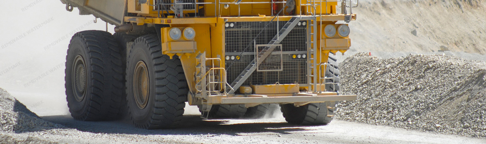

¿Quiénes Somos?

Nosotros
Maquinaria J.McPRIS Es una empresa dedicada a apoyar al sector productivo y de servicios en México. Ofrecemos grúas y camiones usados en excelentes condiciones con sistema hidráulico, utilizados en la elevación y manipulación de cargas, distribuyéndolos en empresas enfocadas al transporte, obras públicas, construcción, permitiendo simplificar el trabajo. Ponemos a su disposición grúas articuladas sueltas de todas las capacidades en marcas líderes mundiales como Hiab, Fassi, HMF, National, Palfinger, Copma, IMT, Tirre y Cormach; para que sean colocadas sobre su camión, si así lo desea, dentro de nuestras instalaciones.
-
Visión
brindar soluciones especializadas y confiables en el manejo y traslado de maquinaria pesada, montajes, etc. de acuerdo a los requerimientos y necesidades especificas de cada cliente, afirmando la solidez y prestigio de la empresa en su liderazgo profesional y su responsabilidad social.
-
Misión
Todas nuestras grúas son revisados por especialistas dentro denuestro taller, en donde pasan un proceso de mantenimiento y pruebas para finalmente podérlas entregar en las mejores condiciones.
Contamos con camiones, grúas articuladas y telescópicas ya instaladas, con los tramites necesarios para facilitar la compra de nuestras unidades.